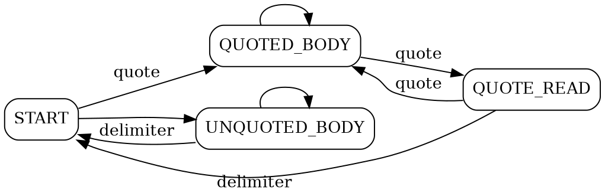
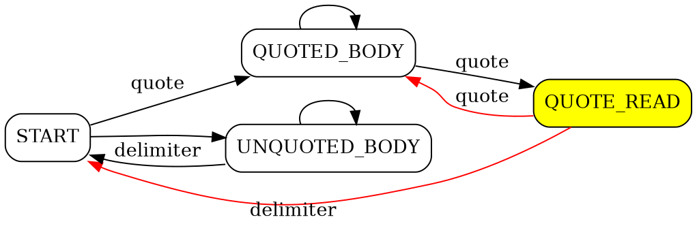
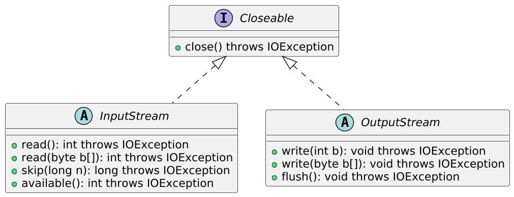
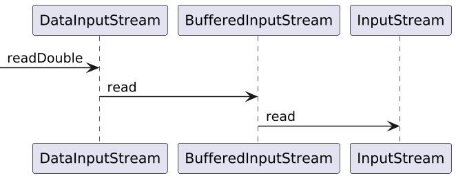

String input = "11:59 am";
Pattern pattern =
Pattern.compile("([1-9]|1[0-2])\\s*:\\s*([0-5][0-9])\\s*([ap]m)");
Matcher matcher = pattern.matcher(input);
//matches() requires full match for the whole string,
//find() -- finds the first match
if (matcher.matches()) {
String hours = matcher.group(1); //11
String minutes = matcher.group(2); //59
String period = matcher.group(3); //am
}Core Java. Lecture #5
Regular expressions. Wrapper classes. IO classes. DateTime API
@inponomarev
Ivan Ponomarev, Synthesized.io/MIPT
Regular expressions
Find/replace in a loop
An example from StackOverflow: we want "1xxxx23" as an output:
Map<String, String> replacements = new HashMap<String, String>();
replacements.put("${env1}", "1");
replacements.put("${env2}", "2");
replacements.put("${env3}", "3");
String line ="${env1}xxxx${env2}${env3}";Find/replace in a loop
//Before Java9 StringBuffer was used
StringBuilder sb = new StringBuilder();
Pattern p = Pattern.compile("(\\$\\{[^}]+\\})");
Matcher m = p.matcher(line);
while (m.find()) {
String repString = replacements.get(m.group(1));
if (repString != null)
m.appendReplacement(sb, repString);
}
m.appendTail(sb);
System.out.println(sb.toString()); //1xxxx23Regular expressions
Advantages
Can validate string format
Tolerable to optional separators, 'garbage' etc.
Groups are powerful device for data extraction
The price we pay
You have to learn (there are thick books on regular expressions)
You have to learn to use them correctly (you can easily shatter the performance)
They look horribly and perplexing
State machines
How can we parse the following string?
Name,Goods and Services
LLC "Monkey Business","stuff, things"
"LLC ""Sea Shore Shop""",sea shellsDefinite State Machine!

Implementation
enum State {START, QUOTED_BODY, QUOTE_READ, UNQUOTED_BODY}
List<String> parse(String line) {
State state = State.START;
List<String> result = new ArrayList<>();
StringBuilder fieldValue = new StringBuilder();
for (char c : line.toCharArray()) {
switch (state) {
case START -> { . . . }
case QUOTED_BODY -> { . . . }
case QUOTE_READ -> { . . . }
case UNQUOTED_BODY -> { . . . }
}
}
result.add(fieldValue.toString());
return result;
}Started to read the field
case START -> {
fieldValue = new StringBuilder();
if (c == '"')
state = State.QUOTED_BODY;
else {
fieldValue.append(c);
state = State.UNQUOTED_BODY;
}}Quoted value
case QUOTED_BODY -> {
if (c == '"')
state = State.QUOTE_READ;
else {
fieldValue.append(c);
}}Came across a quote mark

case QUOTE_READ -> {
if (c == '"') { fieldValue.append(c);
state = State.QUOTED_BODY;
} else if (c == ',') { result.add(fieldValue.toString());
state = State.START;
} else { //invalid input format
throw new IllegalStateException();
}}Unquoted field
case UNQUOTED_BODY -> {
if (c == ',') { result.add(fieldValue.toString());
state = State.START;
} else { fieldValue.append(c);
}}Conclusion
Mathematical fact: Every FSM can be converted into a regular expression, and vice versa.
When it comes to handling strings, regular expressions and DFAs are the bread and butter.
Wrapper Types
Primitive types are incompatible with objects. So there are Wrapper Classes:
|
|
|
|
|
|
|
|
Wrapper-types are similar to strings
Objects are immutable. If a new one is needed, we make a new object, not modify the old one.
Equality check — with
equalsonly!Like strings in string pool, these objects are cached, so it they should be created with
valueOfrather thannew.
Object pool (caching)
|
What is cached
Integer,Short,Long— -128..127'Byte' — completely (-128..127)
Character— 0..127'Boolean' — 'Boolean.TRUE' and 'Boolean.FALSE'
'Float', 'Double' — are not cached, although in the JavaDoc for
valueOfthe possible caching is mentioned.Truth of Life: You’ll use autoboxing more often than
valueOf.
Autoboxing & unboxing
ArrayList<Integer> list = new ArrayList<>();
//autoboxing :-)
list.add(3);
//without autoboxing :-(
list.add(Integer.valueOf(3));
//unboxing :-)
int n = list.get(i);
//with no automatic unboxing :-(
int n = list.get(i).intValue();Autoboxing is not always that obvious
Integer n = 3;
//unbox - increment - box.
//not so effective!!
n++;
Integer a = 1000;
Integer b = 1000;
if (a == b) . . . //NO! THIS WILL FAIL!Convert a number from and to a string
Static methods:
Integer.parseInt(value, radix)Integer.toString(value, radix)Double.parseDouble(value)Double.toString(value)
BigInteger class
BigInteger i = new BigInteger("123456789012345678901234567890");
BigInteger j = new BigInteger("123456789012345678901234567892");
BigInteger sum = i.add(j);
BigInteger difference = i.subtract(j);
BigInteger quotient = i.divide(j);
BigInteger product = i.multiply(j);BigDecimal class
public static BigDecimal calculateTotalAmount(
BigDecimal quantity, BigDecimal unitPrice,
BigDecimal discountRate, BigDecimal taxRate) {
BigDecimal amount = quantity.multiply(unitPrice);
BigDecimal discount = amount.multiply(discountRate);
BigDecimal discountedAmount = amount.subtract(discount);
BigDecimal tax = discountedAmount.multiply(taxRate);
BigDecimal total = discountedAmount.add(tax);
// round to 2 decimal places using HALF_EVEN
BigDecimal roundedTotal = total.setScale(2, RoundingMode.HALF_EVEN);
return roundedTotal;
}Input/Output
IBM2741 terminal, 1965 (source: Wikipedia)
A complete zoo of I/O classes
Cay Horstmann. Core Java, vol. II
Classes for text input/output
Cay Horstmann. Core Java, vol. II
Basic I/O streams

Combining streams

Path path = Paths.get("path/to/file.dat");
try (DataInputStream dis =
new DataInputStream(
new BufferedInputStream(
Files.newInputStream(path)))) {
double doubleVal = dis.readDouble();
long longVal = dis.readLong();
}Combining Streams: Reading a Zip File
Path path = Paths.get("path/to/file.zip");
try(ZipInputStream zis = new ZipInputStream(
Files.newInputStream(path));
DataInputStream dis = new DataInputStream(zis)) {
. . .
}Read/write text data
The modern, simple and correct method:
Path path = Paths.get("path/to/file.txt");
//Lazy reading
Stream<String> lines = Files.lines(path, StandardCharsets.UTF_8);
//Reading of all the contents into memory
List<String> strings =
Files.readAllLines(path, StandardCharsets.UTF_8);Using BufferedReader
try (BufferedReader br =
Files.newBufferedReader(path, StandardCharsets.UTF_8)){
String line;
while ((line = br.readLine())!=null){
. . .
}
}Save prepared data to text
Path path = Paths.get("path/to/file.txt");
List<String> lines = new ArrayList<>();
lines.add(...)
//If everything is already in memory
Files.write(path, lines, StandardCharsets.UTF_8);Saving the text data incrementally
try (PrintWriter printWriter = new PrintWriter(
Files.newBufferedWriter(
path, StandardCharsets.UTF_8))) {
printWriter.println(...);
printWriter.printf(...);
}Working with the file system
Obsolete
File(can still be found, in particular, as an argument of theFileInputStreamconstructor).More modern
Path(Java 7+)
Working with the file system
//Path does not necessarily specify
//an existing file or directory!!
Path absolute = Paths.get("/home", "harry");
Path relative = Paths.get("myprog", "conf", "user.properties");
Path subPath = absolute.resolve("file.txt");
subPath.getParent(); //parent
subPath.getFileName(); //the last component of the pathWorking with the file system
//all components except the last component must exist
Files.createDirectory(path);
creates all directories in path
Files.createDirectories(path);
creates an empty file
Files.createFile(path);
//creates a temporary file in an OS-specific location
Files.createTempFile(prefix, suffix);File verification
//it makes sense to check before you open a stream for reading
Files.exists(path)
Files.isReadable(path)
Files.size(path)Getting the list of files and depth-first directory traversal
//the contents of the folder (without going to subfolders)
Stream<Path> list = Files.list(path);
//traverse the folder tree
Stream<Path> Files.walk(Path start,
int maxDepth, FileVisitOption... options)Copy, move and delete files
Files.copy(fromPath, toPath)
Files.move(fromPath, toPath)
Files.delete(path)Clocks and Datetime API
How many seconds are there in a day?

System clock
'long System.currentTimeMillis()' is the number of milliseconds that have elapsed since midnight on January 1, 1970 on the Greenwich Meridian minus the number of leap seconds, in terms of system clock.
Granularity can be greater than one millisecond.
"Freezes" when inserting a leap second.
Can "jump" in both directions when synchronizing via NTP!
'long System.nanoTime()' — monotonous clock.
Nanosecond accuracy.
There is no reference to the "calendar" time.
Over long periods, inaccuracy of the clock may become noticeable.
When to use what?
'long System.nanoTime()' — when measuring time periods between events occurred on a single machine.
But to measure the performance of Java programs, you should use JMH.
'long System.currentTimeMillis()' — to generate time stamps (minding the constraints).
DateTime API
Obsolete, inconvenient, mutable, non-currently safe classes (do not use them):
Java 1.0 'Date' (it’s still with us because of JDBC),
Java 1.1
Calendar.'DateFormat' works with them.
Modern (Java 8+), immutable classes, learned from mistakes:
LocalDate,LocalTime,Instant,Duration,PeriodZoneId,ZonedDateTime.'DateTimeFormatter' works with them.
Instant
Point on time line
UNIX time
//Current instant
Instant.now();
//explicitly specified Instant
Instant.ofEpochSecond(3);
//What year is it today?
int year = Instant.now().get(ChronoField.YEAR);LocalDate, LocalTime and LocalDateTime
Date and time in the "human" sense.
Without information about time zone → without reference to 'Instant'.
Often binding to an Instant is not needed: "weekly call at 9:00" bound to Instant will "creep" due to daylight saving time.
LocalDate date = LocalDate.of(2014, 3, 18); // March 18, 2014
int year = date.getYear(); //2014
Month month = date.getMonth(); //MARCH
int day = date.getDayOfMonth(); //18
DayOfWeek dow = date.getDayOfWeek(); //TUESDAYLocalTime and LocalDateTime
LocalTime time = LocalTime.of(13, 45, 20); //13:45:20
int hour = time.getHour();
int minute = time.getMinute();
int second = time.getSecond();
LocalDateTime dt1 = LocalDateTime.of(2014, Month.MARCH, 18, 13, 45, 20);
LocalDateTime dt1 = LocalDateTime.of(date, time);
LocalDateTime dt2 = date.atTime(time);
LocalDateTime dt3 = time.atDate(date);
dt1.toLocalDate(); //2014-03-18
dt1.toLocalTime(); //13:45:20Duration and Period
Duration: .Period:LocalDate(, ?)TemporalAmount.
// LocalTime, LocalDateTime Instant
Duration d = Duration.between(time1, time2);
//Only LocalDate is suitable as an argument
Period tenDays = Period.between(
LocalDate.of(2014, 3, 8),
LocalDate.of(2014, 3, 18));Constructing new objects from old ones
Instant i = Instant.now();
Duration d = Duration.ofSeconds(3);
//For example:
i.plus(dd.multipliedBy(10))
.minus(dd.minus(Duration.ofMillis(1)));
//the same can be done with LocalDateTimeFormat and parse date and time
DateTimeFormatter formatter1 =
DateTimeFormatter.ISO_LOCAL_DATE; // YYY-MM-DD
DateTimeFormatter formatter2 =
DateTimeFormatter.ofPattern("dd/MM/yyyy");
DateTimeFormatter formatter3 = new DateTimeFormatterBuilder()
.appendText(ChronoField.DAY_OF_MONTH)
.appendLiteral(". ")
.appendText(ChronoField.MONTH_OF_YEAR)
.appendLiteral(" ")
.appendText(ChronoField.YEAR)
.parseCaseInsensitive()
.toFormatter(Locale.ITALIAN);To string and from string
LocalDate date = LocalDate.of(2014, 3, 18);
String s = date.format(
DateTimeFormatter.ISO_LOCAL_DATE); // 2014-03-18
LocalDate date2 = LocalDate.parse(
s, DateTimeFormatter.ISO_LOCAL_DATE);Time zones
ZoneId moscowZone = ZoneId.of("Europe/Moscow");
ZoneId romeZone = ZoneId.of("Europe/Rome");
LocalDateTime dateTime = LocalDateTime.now();
ZonedDateTime moscowTime = dateTime.atZone(moscowZone);
System.out.println(moscowTime);
//2019-09-30T18:15:52.670+03:00[Europe/Moscow]
ZonedDateTime romeTime =
moscowTime.withZoneSameInstant(romeZone);
System.out.println(romeTime);
//2019-09-30T17:15:52.670+02:00[Europe/Rome]